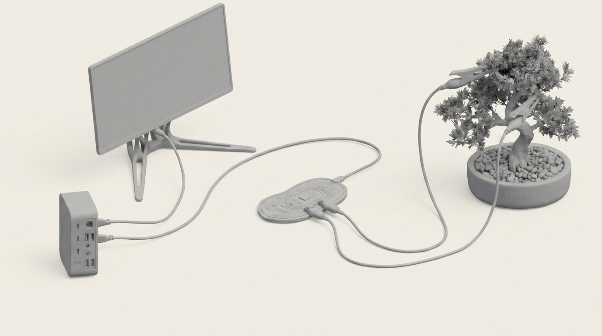

A project in which a living plant authors its own representation.
The Garden of the Human Echoes is a project that exposes the anthropocentric bias embedded in generative diffusion models and attempts to subvert it by building an artifact in which human authorship is removed as far as the technology allows. Through research and systematic testing, the project demonstrates that these models consistently reproduce human ways of seeing, regardless of how they are prompted. It then proposes an alternative in the form of an installation in which a living plant authors its own representation. Using a Playtronica Biotron, the plant's bioelectrical and light signals are translated simultaneously into a generative text prompt and sound, whose waveform becomes the visual input for a real-time generative process. The outcome establishes whether anthropocentric bias in diffusion models is structural rather than superficial and tests whether a living organism can be placed in the position of author. The objective, put plainly, is to make the invisible process behind these systems visible and to open a conversation about what anthropocentrism in AI actually means.

The Plant
My artifact is only meaningful if a plant's electrical activity is treated as a biological signal rather than noise. Plants produce multiple types of electrical signals across tissue – action, variation, and system potentials – each linked to internal and environmental states (Trebacz et al., 2006). These signals are physiologically significant forms of plant communication and response. The plant is therefore not treated as a passive source of random data, but as an intelligent living system that senses, processes, and reacts to its surroundings in real time (Calvo et al., 2020).
The Biotron
The sensing device is a Playtronica Biotron, attached to the plant via alligator-clip electrodes on a leaf or stem. It continuously reads two things: the bioelectrical resistance across the plant's surface, and the ambient light level through a sensor on its body. Both are converted into MIDI data and streamed live to the computer via USB. A Python script receives this stream, normalises the values on a scale of 0.0 to 1.0.
The Computer
Biotron translates the plant's bioelectrical signals into a prompt system. The prompt combines fixed anti-representational terms (non-hierarchical, no focal point, not representational, formless energetic state) with a scientific vocabulary drawn from plant physiology and photosynthesis literature. A negative prompt blocks the model's default tendencies: photograph, landscape, human, face, aesthetic composition, beautiful, centred subject. The vocabulary comes from a fixed schema mapping signal ranges to scientific terms — bioelectrical (resting membrane potential, rhythmic depolarisation, systemic depolarisation; Trebacz et al., 2006; Fromm & Lautner, 2007) and light (photon scarcity, active electron transport chain, photoinhibition threshold; Baker, 2008) — chosen for physiological accuracy, not atmosphere. Each channel has three registers: low (0.0–0.3), mid (0.3–0.7), high (0.7–1.0). The signal selects the register; word choice within it is random, seeded by the plant's raw MIDI value. Simultaneously, the signal is rendered as real-time audio, producing a waveform that directly translates the plant's electrical state. This waveform is visualised and fed into StreamDiffusion as the source image.
The Display
StreamDiffusion takes a live incoming image and transforms it in real time according to a guiding prompt. Here, the incoming image is the visual form of the plant-generated waveform, while the prompt is assembled from the plant-driven vocabulary schema. Both operate simultaneously, allowing the output image to emerge from the interaction between the plant's electrical activity, its translated sound, and the model's generative process. The result is an image that comes from the plant's signal in the most direct sense available: an image grown from the actual shape of its electrical voice, steered by the words its biology generated. The system runs continuously, updating as the plant's state changes. Rather than producing discrete outputs, it functions as a live visual process, the plant's biological rhythm unfolding in real time for as long as the system remains active.
When I first started thinking about which aspect of AI I wanted to research, I looked back at my work from my first semester, and most of it circled the relationship between AI and nature. That was no accident: nature has always been my way into things, not as something to depict but as a system to learn from. And this course sharpened that instinct, making me realise how many natural resources go into keeping AI systems running, which in turn made me want to show that nature is not just a resource to be consumed. So my questions came from the place they always come from: how does AI process nature? How does it picture it? And what does that picture say about us, as humans?
At the start of this project, my ambitions were broader. I wanted to help people think more realistically about their consumption of AI, to support a sense of orientation toward these systems, and to draw attention to the question of sustainability in how they are built and used. Those concerns are still present in the work, but as the research developed they narrowed into something more specific and more testable. The project that emerged pursues three linked aims: establishing whether anthropocentric bias in diffusion models is structural rather than superficial, testing whether a living organism can be placed in the position of author. The objective, put plainly, is to make the invisible process behind these systems visible and to open a conversation about what anthropocentrism in AI actually means.
AI image generation doesn't just produce images of nature, it produces images of nature as seen by a very particular kind of observer, one shaped entirely by human training data, human aesthetic preferences, and human ideas about what a good image looks like. These systems make compositional choices the way a trained human eye would. They reach for focal points, deliberate lighting, and a recognisable frame. They produce images that feel authored, even when the prompt asks for something that has no author in that sense. The word for this condition is anthropocentrism: the assumption that the human perspective is the natural centre of meaning, value, and representation. In this context, anthropocentrism refers to the structural privileging of human perception as the default framework for representation.
Three bodies of research laid the foundation of my initial standpoint. According to Alkhateeb et al. (2025), generative AI frequently falls back on familiar Western European pastoral styles when generating landscapes, regardless of what the prompt instructs. Gould et al. (2024) show that AI systems tend to frame nature in instrumental terms, as resource, playground, or gift, always in relation to human use rather than as an independent subject with its own agency. Hupont et al. (2024) introduce the concept of the Synocene as a way to move beyond the Anthropocene in human-nature-AI relations, arguing for a fundamental shift in how AI systems are designed to relate to non-human entities.
The theoretical frame that kept pulling me back was N. Katherine Hayles's posthumanism. In How We Became Posthuman (2000), Hayles argues that cognition is not a uniquely human property, it is distributed between humans, technology, and environment, and the boundary between human and non-human is culturally constructed rather than natural. Applied to diffusion models, this reveals something precise: these systems encode a particular way of seeing, one in which the non-human exists as backdrop, never as a perspective from which to look. James Bridle's Ways of Being (2022) extends this further, arguing for a radical expansion of what we consider intelligence and agency, one that includes animals, plants, and ecosystems. Both frame the same problem this project is trying to make visible: the assumption that human cognition is the only kind that counts.
The scientific literature on plant intelligence pushes back from the other direction. Mancuso and Viola (2015) argue that cultural prejudice, not scientific evidence, leads us to underestimate plant agency. Gagliano (2018) treats plants as subjects, entities that sense, respond, communicate, and adapt. Calvo et al. (2020) go further, arguing that plants exhibit forms of cognition that challenge the boundaries of what we consider intelligence. Once you take that seriously, the question of who gets to author an image stops being technical and becomes ethical.
These frameworks come together in a single question with two movements: how is anthropocentric bias structurally embedded in diffusion models, and is it possible to subvert it by replacing human authorship with a living organism? The first half asks whether the bias is real, where it comes from, and whether it can be removed through prompting. The second half is constructive, asking whether an alternative is possible. The two are logically dependent, because the second only becomes meaningful once the first establishes that the bias is structural rather than superficial. If better prompting could resolve it, there would be no need to change the author.
Before building anything, I needed to establish whether the bias was real, structural, and resistant to correction through prompting alone.
Diffusion models are what sit behind the most widely used image generation tools today. Stable Diffusion, Midjourney, DALL-E 3, and Flux — the systems examined in this research — are tools a lot of people encounter when they engage with AI-generated imagery today. Diffusion models work by learning to reverse a noise process, gradually recovering a coherent image from random noise, guided by a text prompt. The direction of that recovery is determined by statistical patterns learned from training data. What comes out is shaped by what went in, so understanding what went in is essential to understanding why the outputs look the way they do.
The training dataset at the centre of this investigation is LAION-5B, a collection of 5.85 billion image-text pairs built from web scraping and filtered using CLIP, a model developed at OpenAI. CLIP was trained to match images with human-written descriptions of those images. It does not learn what an image is, it learns what humans say about images. The bias is not merely preserved in this process, it is reinforced. Bender et al. (2021) made the same argument about large language models: such systems do not simply reflect their training data, they reproduce and amplify the cultural frameworks embedded in it. The same logic extends from language into vision.
To test whether this survived even direct instruction, I ran structured prompting across Flux, Midjourney v7, and DALL-E 3, using prompts that specified explicitly non-human perspectives: a forest from the perspective of a root, a forest from the perspective of a leaf. Each image was assessed against five criteria: whether there was a clear focal point, whether the lighting was aesthetically deliberate, whether the composition assumed a human viewing position, whether the frame was arranged for a standing or crouching human observer, and whether the prompt instruction was followed or overridden by convention.
The results were consistent across all three models. Every image was a recognisable genre of human photography, whether nature photography, macro photography, or cinematic landscape, even when the prompt asked for a non-human point of view. The systems did not attempt to imagine non-human experience. They transposed the camera to the requested location and rendered what a human observer would see from there.
This project sits within a growing body of practice that attempts to shift creative agency toward non-human entities. The conceptual anchor furthest back is John Cage's Silence (1961), particularly its treatment of intention and authorship. Cage's interest in removing compositional intention from musical authorship maps directly onto the question this project asks of images: what remains when the human decision to shape the output is withdrawn as far as possible?
More recent precursors in art and design make that question concrete. Sareen and Maes' Elowan (MIT Media Lab, 2018) placed a plant in direct control of a robotic platform, its bioelectrical signals steering movement toward light, with the human stepping back after the initial design. Harold Alec Wilson's linea naturalis (2024) translates plant bioelectrical activity into sound, with composition emerging from biological signals rather than human intention. Srivastava's generative practice connects plants directly to visual software, and her reflection on the difficulty of keeping human aesthetic preference out of the output was a useful friction point for this project.
Bowen's Tele-present Wind and Tele-present Water are relevant here for treating non-human environmental signals as the primary substance of an installation, rather than its subject matter or inspiration. Sommerer and Mignonneau's Interactive Plant Growing is one of the earliest instances of a living organism functioning as an active generative input, placing the plant inside a feedback loop rather than in front of a camera. Ikeda's Datamatics makes the case that raw, unmediated data is itself a valid visual language, which runs parallel to the argument this project makes about plant signals: that they do not need to be interpreted or aestheticised to be meaningful. Barrat's plant-art is the most direct technical precursor, translating plant bioelectrical activity into generative image software, and sits closest to the diagnostic starting point of this project.
If the bias survives even when language is used to correct it, the question becomes what happens when the language is no longer written by a human at all.
My initial direction was to train LoRA (Low-Rank Adaptation) models on natural elements and, using a depth camera in TouchDesigner together with StreamDiffusion, project these onto human body shapes in real time, making visible how the human form remains at the centre even when nature is invoked. I abandoned this early. The gesture felt like a diagram of the argument rather than an encounter with it, too disconnected from the research.
The second direction was more generative. Using a Playtronica Biotron connected to a plant, I built a system that translated the plant's bioelectrical and light signals into a generative prompt and produced a new image every minute, accumulating an archive of plant-authored images over time. It demonstrated the concept clearly and was interactive with its environment through the plant.
The final direction keeps the same logic and changes the register. Rather than a minute-by-minute archive, the plant generates both the text prompt and the visual input simultaneously and continuously, through a sound-to-waveform translation. The result is a live process rather than a collection of objects: the plant's biological rhythm made visible in the present tense.
AI is not a tool used to make the work, but the language of anthropocentrism itself. Models such as Flux, Midjourney v7, DALL·E 3, and Stable Diffusion are systematically tested to expose their anthropocentric bias, while StreamDiffusion functions as the generative core of the final installation. Conceptually, these systems were chosen because they are sites most widely used for image generation. Alongside this, Claude Code was used to support several technical components of the project, including programming tasks, MIDI signal handling, normalisation processes, vocabulary schema logic, and the integration of StreamDiffusion.
StreamDiffusion cannot escape the conditions it was trained under. Whatever enters it, whether plant-derived waveforms, physiological vocabularies, or deliberate counter-instructions, is still processed through a model built on human images and human ways of seeing. This persistence is the central outcome of the work.
Human decisions remain embedded throughout the process as well. The vocabulary schema was grounded in plant physiology, which is still a human choice. The parameters shaping how the MIDI signal becomes audio were configured by a person.
If I were to continue, I would push harder at narrowing those interventions and at expanding what the system can sense beyond surface resistance and light — the Biotron captures only a fraction of the plant's activity.
My project tests whether this technology could be used in a way that is not centred on the human view, and the answer it arrives at is no, at least not as the technology currently stands. I tried to build a non-anthropocentric system and I failed. The attempt was not wasted: it showed me that such a system can be polished, pushed, prompted into something less anthropocentric than the default. But the bias does not sit on the surface where prompting can reach it. It is in the training data, scraped from human-made images, and in the architecture that learns from them.
To build something genuinely non-anthropocentric, you would need non-human training data and, plausibly, neural networks not modelled on human ways of seeing, and that immediately raises the harder question of whether such a thing is even possible, or even coherent. What would non-human data look like, gathered by whom, legible to whom?
And that is the deeper thing the artifact ends up pointing at. Anthropocentrism here is not a bug to be fixed or a setting to be switched off. It is the condition the whole system is built inside. The artifact does not solve that. What it does is make the condition visible, hold it up so it can be seen rather than assumed, and that, in the end, was the whole job.
Hamill Industries, Joan Sandoval, Hanna Kővári, Szonja Vogl, and the class of '26 MAIAD Elisava.